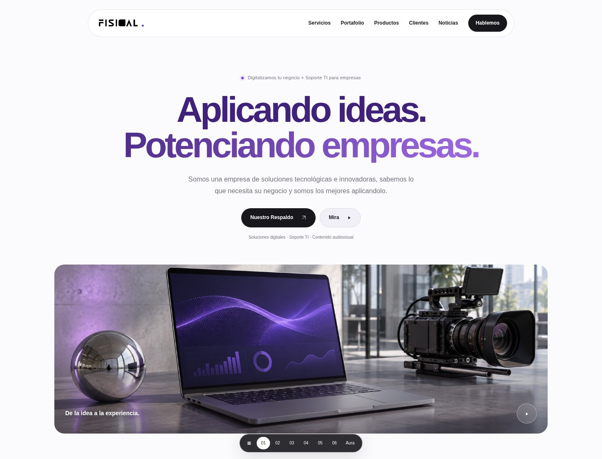
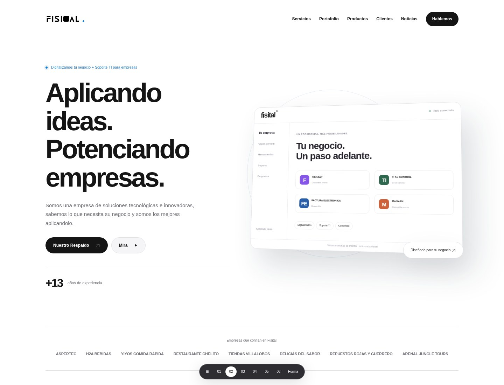
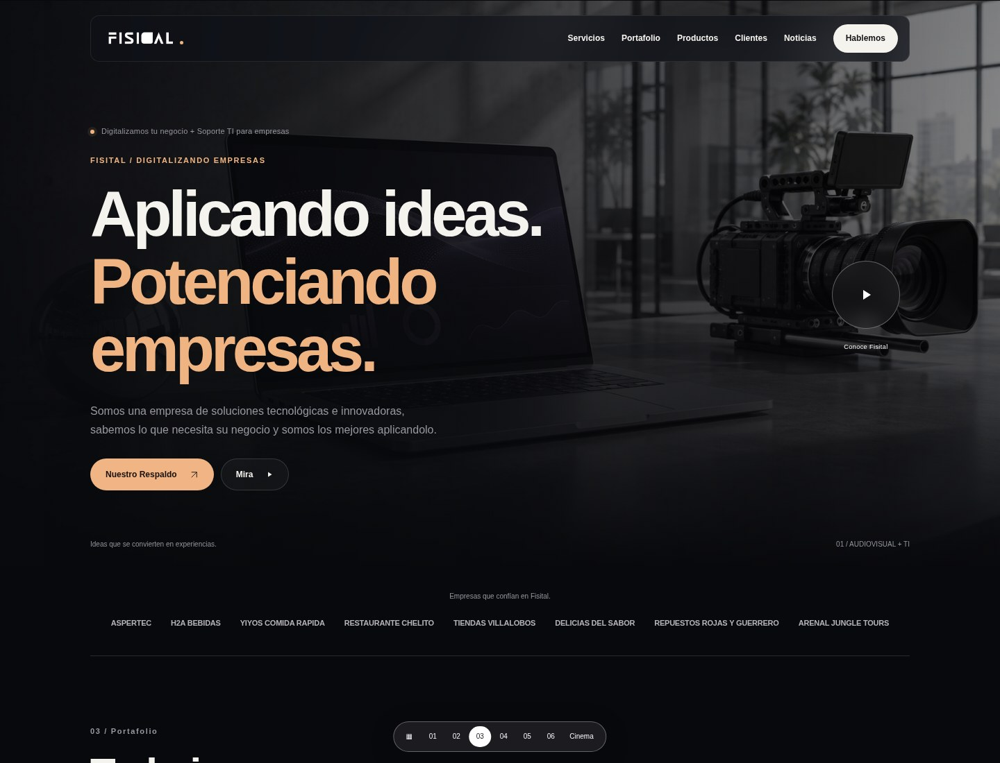
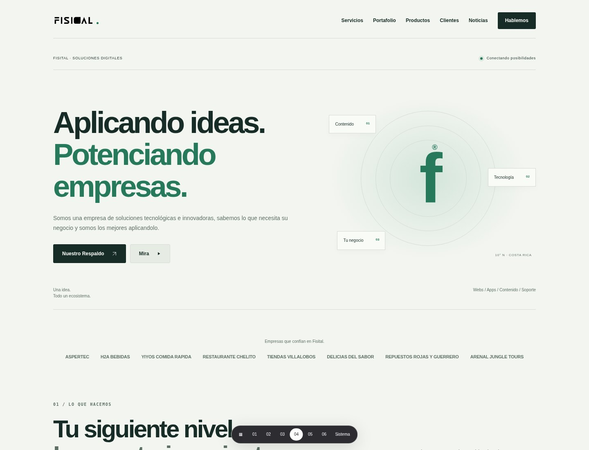
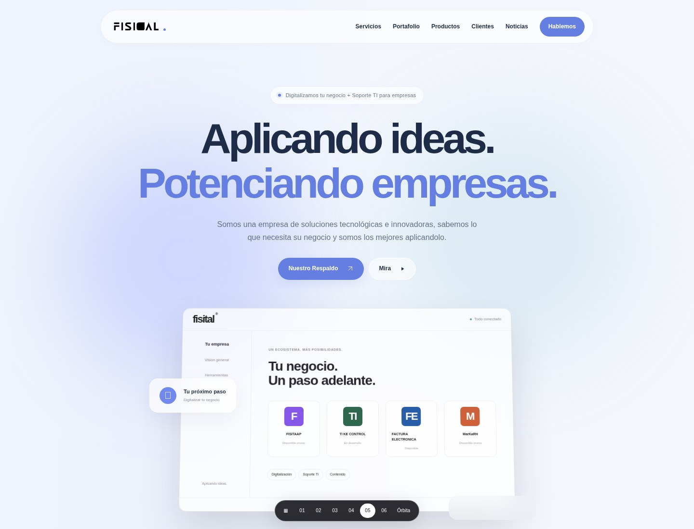
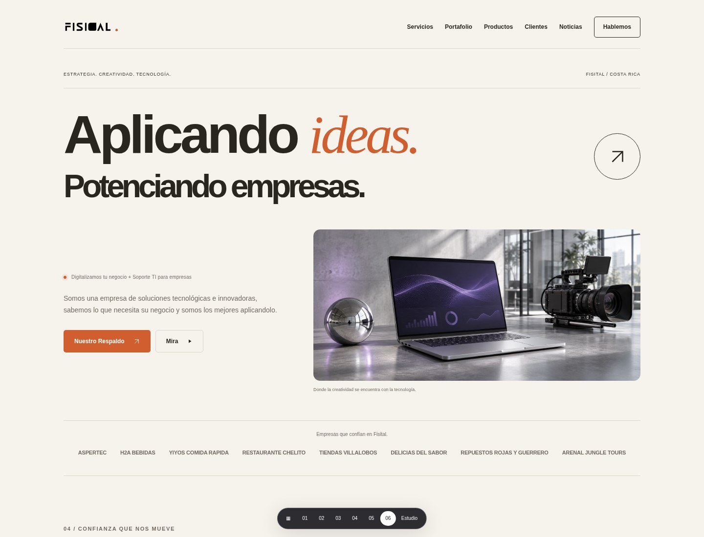

Seis experiencias navegables con el contenido de tu sitio actual. Más claridad, más espacio y una presencia tecnológica más cuidada. Explora cada propuesta en computadora y en el celular.

Portada centrada, blancos amplios, título en violeta y una imagen protagonista. Cercana a la referencia que compartiste, con una estructura clara para convertir visitas en conversaciones.
La más cercana a tu referencia
Una dirección inspirada en la claridad de Apple: negro y blanco, grandes tarjetas de producto, una interfaz conceptual y acentos azules. Ideal para destacar FISITAAP y MarKaRH.
La más cercana al enfoque Apple
Una portada cinematográfica, negro profundo y cobre suave. El portafolio ocupa el primer plano. Para dar mayor peso al trabajo audiovisual sin perder productos y soporte TI.

Retícula técnica, verde profundo y tonos minerales. Servicios en filas, tipografía sobria y una composición ordenada para explicar soluciones empresariales con claridad.

Capas transparentes, luz azul y una interfaz flotante. Una dirección tecnológica con profundidad sutil, tarjetas suaves y una sensación de ecosistema digital.

Composición editorial, crema y naranja, tipografía expresiva y proyectos en una retícula escalonada. Una identidad más creativa, humana y diferenciada.
Son propuestas visuales HTML, no un reemplazo de tu sitio actual. Se conserva el contenido del respaldo; las imágenes e interfaces son de referencia. El formulario es demostrativo y no envía ni guarda datos. Al elegir un estilo, se puede integrar con tu panel para administrar los contenidos e imágenes.
Ver las seis portadas juntas ↗